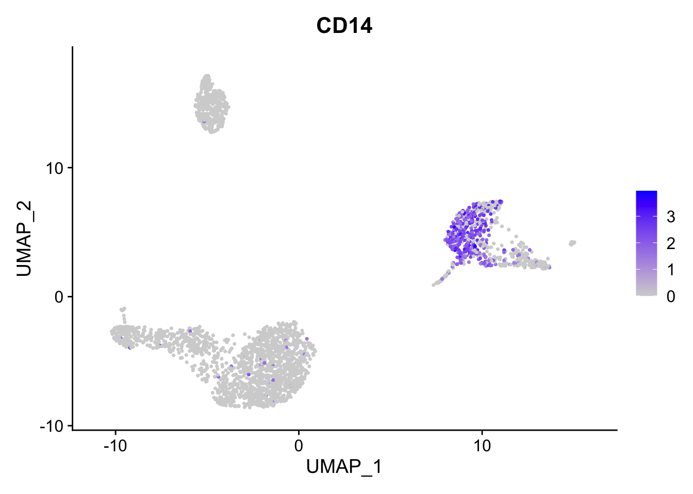

7 QC Filtering
Discuss counts per cell/gene and make plots
Discuss that there’s no one threshold
everyone pick a threshold and go filter
check numbers of cells.
save your object
(other qc metrics = Mt gene content, cell cycle asignment, low seq diversity e.t.c)
The steps below encompass the standard pre-processing workflow for scRNA-seq data in Seurat. These represent the selection and filtration of cells based on QC metrics, data normalization and scaling, and the detection of highly variable features.
7.1 QC and selecting cells for further analysis
Seurat allows you to easily explore QC metrics and filter cells based on any user-defined criteria. A few QC metrics commonly used by the community include
- The number of unique genes detected in each cell.
- Low-quality cells or empty droplets will often have very few genes
- Cell doublets or multiplets may exhibit an aberrantly high gene count
- Similarly, the total number of molecules detected within a cell (correlates strongly with unique genes)
- The percentage of reads that map to the mitochondrial genome
- Low-quality / dying cells often exhibit extensive mitochondrial contamination
- We calculate mitochondrial QC metrics with the
PercentageFeatureSet()function, which calculates the percentage of counts originating from a set of features - We use the set of all genes starting with
MT-as a set of mitochondrial genes
# The $ operator can add columns to object metadata. This is a great place to stash QC stats
pbmc$percent.mt <- PercentageFeatureSet(pbmc, pattern = "^MT-")7.1.0.1 Challenge: The meta.data slot in the Seurat object
Where are QC metrics stored in Seurat?
- The number of unique genes and total molecules are automatically calculated during
CreateSeuratObject()- You can find them stored in the object meta data
What do you notice has changed within the meta.data table now that we have calculated mitochondrial gene proportion?
Could we add more data into the meta.data table?
7.1.1
In the example below, we visualize QC metrics, and use these to filter cells.
- We filter cells that have unique feature counts over 2,500 or less than 200
- We filter cells that have >5% mitochondrial counts
#Visualize QC metrics as a violin plot
VlnPlot(pbmc, features = c("nFeature_RNA", "nCount_RNA", "percent.mt"), ncol = 3)
# FeatureScatter is typically used to visualize feature-feature relationships, but can be used for anything calculated by the object, i.e. columns in object metadata, PC scores etc.
plot1 <- FeatureScatter(pbmc, feature1 = "nCount_RNA", feature2 = "percent.mt")
plot2 <- FeatureScatter(pbmc, feature1 = "nCount_RNA", feature2 = "nFeature_RNA")
plot1 + plot2
Lets look at the number of features (genes) to the percent mitochondrial genes plot.
plot3 <- FeatureScatter(pbmc, feature1 = "nFeature_RNA", feature2 = "percent.mt")
plot3
7.1.1.1 Challenge: Ribosomal gene expression as a QC metric
Ribosomal gene expression could be another factor to look into your cells within your experiment.
Create more columns of metadata using PercentageFeatureSet function, this time search for ribosomal genes. We can calculate the percentage for the large subunit (RPL) and small subunit (RPS) ribosomal genes.
Use FeatureScatter to plot combinations of metrics available in metadata. How is the mitochondrial gene percentage related to the ribosomal gene percentage? What can you see? Discuss in break out.
Code for challenge
Create new meta.data columns to contain percentages of the large and small ribosomal genes.
Then plot a scatter plot with this new data. You should find that the large and small ribosomal subunit genes are correlated within cell.
What about with mitochondria and gene, feature counts?
These are the cells you may want to exclude.Advanced Challenge
Highlight cells with very low percentage of ribosomal genes, create a new column in the meta.data table and withFeatureScatter make a plot of the RNA count and mitochondrial percentage with the cells with very low ribosomal gene perentage.
7.1.2
Okay we are happy with our thresholds for mitochondrial percentage in cells, lets apply them and subset our data. This will remove the cells we think are of poor quality.
pbmc <- subset(pbmc, subset = nFeature_RNA > 200 & nFeature_RNA < 2500 & percent.mt < 5)Lets replot the feature scatters and see what they look like.
plot5 <- FeatureScatter(pbmc, feature1 = "nCount_RNA", feature2 = "percent.mt")
plot6 <- FeatureScatter(pbmc, feature1 = "nCount_RNA", feature2 = "nFeature_RNA")
plot5 + plot6